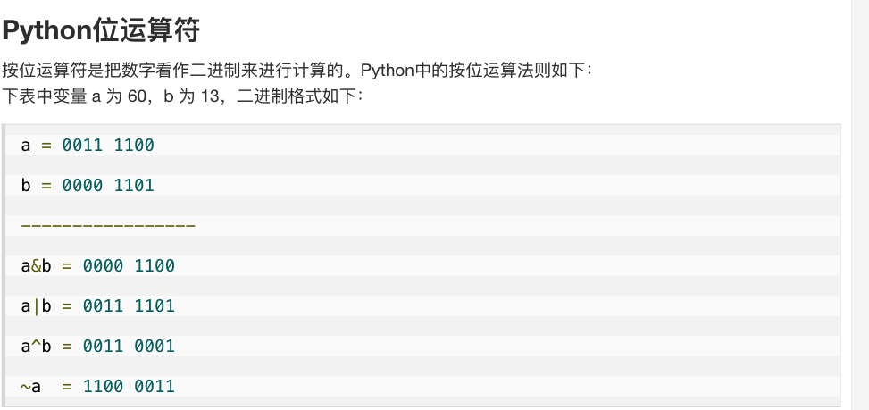
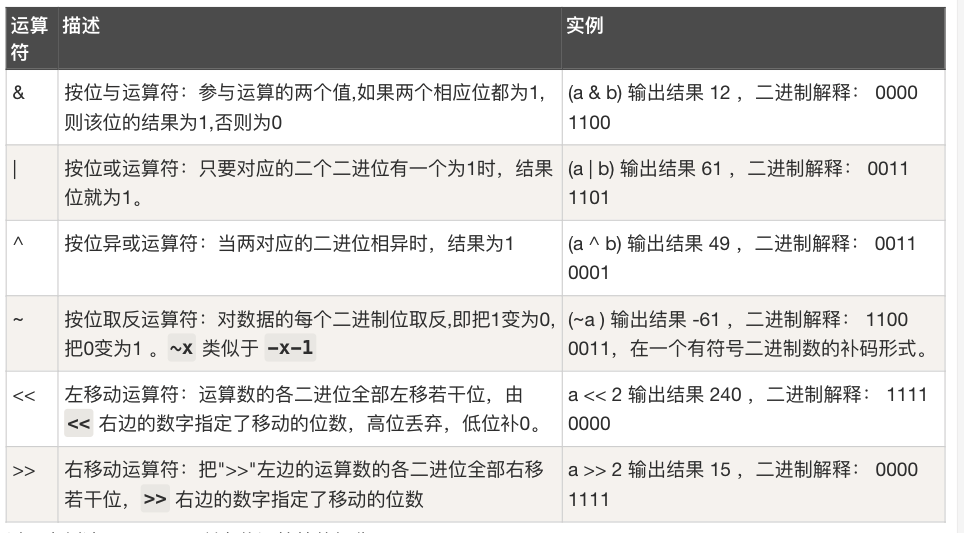

Bit Manipulation
Last updated: Feb 23, 2024Table of Contents
Bit Manipulation
0) Concept
-
Base
- Ref
- The actual value of a base-X number is determined by each digit and its location.
- example :
- 123.45 (base 10) = 1 * 10^2 + 2 * 10^1 + 3 * 10^0 + 4 * 10^(-1) + 5 * 10^(-2)
- 720.5 (base 8) = 7 * 8^2 + 2 * 8^1 + 0 * 8^0 + 5 * 8^(-1)
- In computer science, the binary system is most commonly used. It has two digits: 0, and 1. Octal (base-8) and hexadecimal (base 16) are also commonly used. Octal has eight digits: 0, 1, 2, 3, 4, 5, 6, and 7.
-
- basic
- bit : binary number (use 2 as base : 0, 1)
- Hexadecimal Number : use 16 as base : 0123456789abcdef (lower, upper case are same)
- byte : 8 bytes (字節)
- char : 16 bytes (字符)
- ref:
- basic
-
ref


0-1) Types
0-2) Pattern
1) General form
1-1) Basic OP
2) LC Example
2-1) Gray Code
1# LC 89 Gray Code
2# V0
3# IDEA : bit op
4# https://blog.csdn.net/qqxx6661/article/details/78371259
5# DEMO
6# i = 0 bin(i) = 0b0 bin(i >> 1) = 0b0 bin(i >> 1) ^ i = 0b0
7# i = 1 bin(i) = 0b1 bin(i >> 1) = 0b0 bin(i >> 1) ^ i = 0b1
8# i = 2 bin(i) = 0b10 bin(i >> 1) = 0b1 bin(i >> 1) ^ i = 0b11
9# i = 3 bin(i) = 0b11 bin(i >> 1) = 0b1 bin(i >> 1) ^ i = 0b10
10# i = 4 bin(i) = 0b100 bin(i >> 1) = 0b10 bin(i >> 1) ^ i = 0b110
11# i = 5 bin(i) = 0b101 bin(i >> 1) = 0b10 bin(i >> 1) ^ i = 0b111
12# i = 6 bin(i) = 0b110 bin(i >> 1) = 0b11 bin(i >> 1) ^ i = 0b101
13# i = 7 bin(i) = 0b111 bin(i >> 1) = 0b11 bin(i >> 1) ^ i = 0b100
14# i = 8 bin(i) = 0b1000 bin(i >> 1) = 0b100 bin(i >> 1) ^ i = 0b1100
15# i = 9 bin(i) = 0b1001 bin(i >> 1) = 0b100 bin(i >> 1) ^ i = 0b1101
16# i = 10 bin(i) = 0b1010 bin(i >> 1) = 0b101 bin(i >> 1) ^ i = 0b1111
17# i = 11 bin(i) = 0b1011 bin(i >> 1) = 0b101 bin(i >> 1) ^ i = 0b1110
18# i = 12 bin(i) = 0b1100 bin(i >> 1) = 0b110 bin(i >> 1) ^ i = 0b1010
19# i = 13 bin(i) = 0b1101 bin(i >> 1) = 0b110 bin(i >> 1) ^ i = 0b1011
20# i = 14 bin(i) = 0b1110 bin(i >> 1) = 0b111 bin(i >> 1) ^ i = 0b1001
21# i = 15 bin(i) = 0b1111 bin(i >> 1) = 0b111 bin(i >> 1) ^ i = 0b1000
22class Solution(object):
23 def grayCode(self, n):
24 res = []
25 size = 2**n
26 for i in range(size):
27 print ("i = " + str(i) + " bin(i) = " + str(bin(i)) + " bin(i >> 1) = " + str(bin(i >> 1)) + " bin(i >> 1) ^ i = " + str( bin((i >> 1) ^ i) ) )
28 """
29 NOTE :
30 step 1) we move 1 digit right in every iteration (i >> 1), for keep adding space
31 step 2) we do (i >> 1) ^ i. for getting "inverse" binary code with i
32 step 3) append and return the result
33 """
34 res.append((i >> 1) ^ i)
35 return res
36
37# V1'
38# https://ithelp.ithome.com.tw/articles/10213273
39# DEMO
40# In [23]: add=1
41
42# In [24]: add = add << 1
43
44# In [25]: add
45# Out[25]: 2
46
47# In [26]: add = add << 1
48
49# In [27]: add
50# Out[27]: 4
51
52# In [28]: add = add << 1
53
54# In [29]: add
55# Out[29]: 8
56
57# In [30]: add = add << 1
58
59# In [31]: add
60# Out[31]: 16
61
62# In [32]: add = add << 1
63
64# In [33]: add
65# Out[33]: 32
66#
67class Solution:
68 def grayCode(self, n):
69 res = [0]
70 add = 1
71 for _ in range(n):
72 for i in range(add):
73 res.append(res[add - 1 - i] + add);
74 add <<= 1
75 return res
2-2) Reverse Bits
1# 190. Reverse Bits
2# V0
3class Solution:
4 def reverseBits(self, n):
5 s = bin(n)[2:]
6 s = "0"*(32 - len(s)) + s
7 t = s[::-1]
8 return int(t,2)
9
10# V0'
11# DEMO
12# n = 10100101000001111010011100
13# n = 10100101000001111010011100
14class Solution:
15 def reverseBits(self, n):
16 n = bin(n)[2:] # convert to binary, and remove the usual 0b prefix
17 print ("n = " + str(n))
18 n = '%32s' % n # print number into a pre-formatted string with space-padding
19 print ("n = " + str(n))
20 n = n.replace(' ','0') # Convert the useful space-padding into zeros
21 # Now we have a proper binary representation, so we can make the final transformation
22 return int(n[::-1],2)
23
24# V0''
25class Solution(object):
26 def reverseBits(self, n):
27 #b = bin(n)[:1:-1]
28 b = bin(n)[2:][::-1]
29 return int(b + '0'*(32-len(b)), 2)
2-3) Power of Two
1# LC 231. Power of Two
2# NOTE : there is also brute force approach
3# V0'
4# IDEA : BIT OP
5# IDEA : Bitwise operators : Turn off the Rightmost 1-bit
6# https://leetcode.com/problems/power-of-two/solution/
7class Solution(object):
8 def isPowerOfTwo(self, n):
9 if n == 0:
10 return False
11 return n & (n - 1) == 0
2-4) Add Binary
1# LC 67. Add Binary
2# V0
3# IDEA : Bit-by-Bit Computation
4class Solution:
5 def addBinary(self, a, b):
6 n = max(len(a), len(b))
7 """
8 NOTE : zfill syntax
9 -> fill n-1 "0" to a string at beginning
10
11 example :
12 In [10]: x = '1'
13
14 In [11]: x.zfill(2)
15 Out[11]: '01'
16
17 In [12]: x.zfill(3)
18 Out[12]: '001'
19
20 In [13]: x.zfill(4)
21 Out[13]: '0001'
22
23 In [14]: x.zfill(10)
24 Out[14]: '0000000001'
25 """
26 a, b = a.zfill(n), b.zfill(n)
27
28 carry = 0
29 answer = []
30 for i in range(n - 1, -1, -1):
31 if a[i] == '1':
32 carry += 1
33 if b[i] == '1':
34 carry += 1
35
36 if carry % 2 == 1:
37 answer.append('1')
38 else:
39 answer.append('0')
40
41 carry //= 2
42
43 if carry == 1:
44 answer.append('1')
45 answer.reverse()
46
47 return ''.join(answer)
48
49# V0''''
50# IDEA : py default
51class Solution:
52 def addBinary(self, a, b) -> str:
53 return '{0:b}'.format(int(a, 2) + int(b, 2))
54
55# V0''''
56# IDEA : Bit Manipulation
57class Solution:
58 def addBinary(self, a, b) -> str:
59 x, y = int(a, 2), int(b, 2)
60 while y:
61 answer = x ^ y
62 carry = (x & y) << 1
63 x, y = answer, carry
64 return bin(x)[2:]
2-5) Sum of Two Integers
1# 371. Sum of Two Integers
2# V0'
3# https://blog.csdn.net/fuxuemingzhu/article/details/79379939
4#########
5# XOR op:
6#########
7# https://stackoverflow.com/questions/14526584/what-does-the-xor-operator-do
8# XOR is a binary operation, it stands for "exclusive or", that is to say the resulting bit evaluates to one if only exactly one of the bits is set.
9# -> XOR : RETURN 1 if only one "1", return 0 else
10# -> XOR extra : Exclusive or or exclusive disjunction is a logical operation that is true if and only if its arguments differ. It is symbolized by the prefix operator J and by the infix operators XOR, EOR, EXOR, ⊻, ⩒, ⩛, ⊕, ↮, and ≢. Wikipedia
11# a | b | a ^ b
12# --|---|------
13# 0 | 0 | 0
14# 0 | 1 | 1
15# 1 | 0 | 1
16# 1 | 1 | 0
17# This operation is performed between every two corresponding bits of a number.
18# Example: 7 ^ 10
19# In binary: 0111 ^ 1010
20# 0111
21# ^ 1010
22# ======
23# 1101 = 13
24class Solution(object):
25 def getSum(self, a, b):
26 """
27 :type a: int
28 :type b: int
29 :rtype: int
30 """
31 # 32 bits integer max
32 MAX = 2**31-1 #0x7FFFFFFF
33 # 32 bits interger min
34 MIN = 2**31 #0x80000000
35 # mask to get last 32 bits
36 mask = 2**32-1 #0xFFFFFFFF
37 while b != 0:
38 # ^ get different bits and & gets double 1s, << moves carry
39 a, b = (a ^ b) & mask, ((a & b) << 1) & mask
40 # if a is negative, get a's 32 bits complement positive first
41 # then get 32-bit positive's Python complement negative
42 return a if a <= MAX else ~(a ^ mask)
43
44# V0'
45# https://blog.csdn.net/fuxuemingzhu/article/details/79379939
46class Solution():
47 def getSum(self, a, b):
48 MAX = 2**31-1 #0x7fffffff
49 MIN = 2**31 #0x80000000
50 mask = 2**32-1 #0xFFFFFFFF
51 while b != 0:
52 a, b = (a ^ b) & mask, ((a & b) << 1)
53 return a if a <= MAX else ~(a ^ mask)